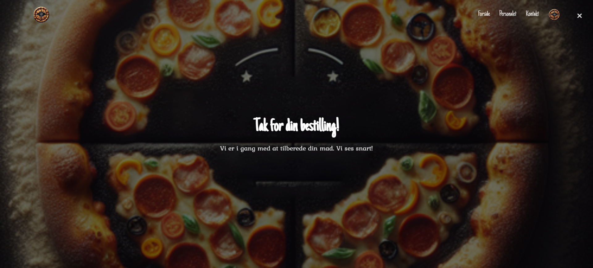

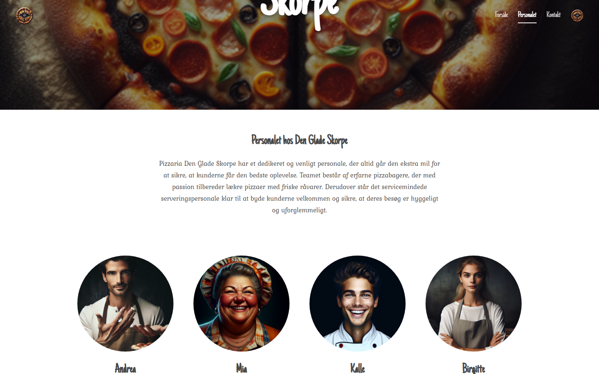
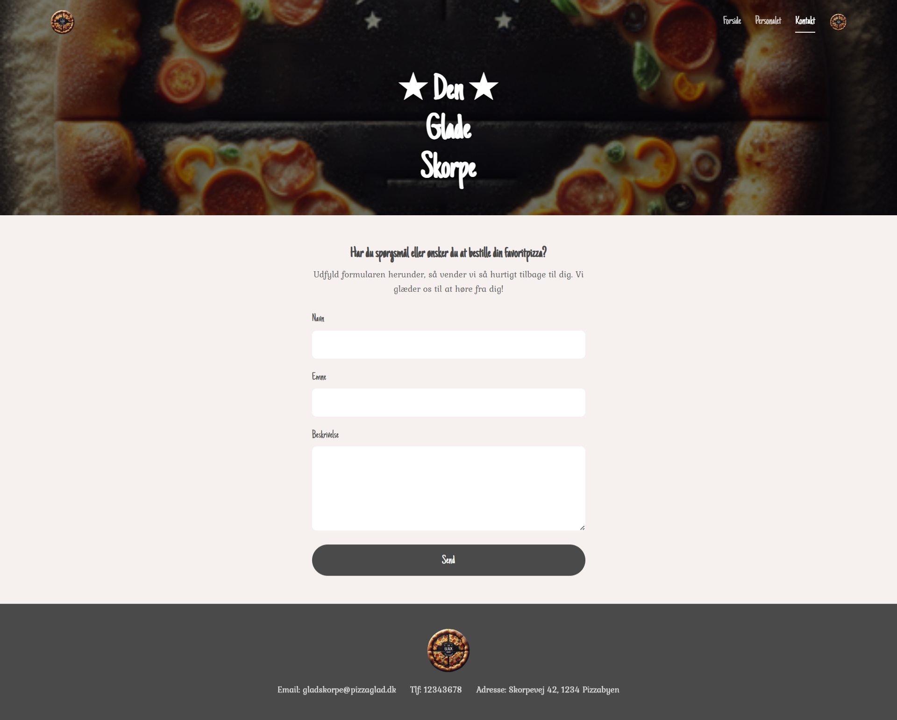
Fagprøverapport
Jeg bekræfter hermed, at denne opgave er udarbejdet af mig selv, og at jeg ikke har afleveret den eller dele af den til vurdering ved andre eksaminer. Jeg har angivet alle anvendte kilder og hjælpemidler, herunder AI-assisterede værktøjer.
Mathias Boll — 26-06-2026
Jeg er overordnet tilfreds med resultatet. Det lykkedes mig at bygge en komplet, mobilvenlig webapplikation med et sammenhængende brugerflow fra forside til afgivet ordre. Alle obligatoriske krav er implementeret, og jeg nåede at gennemføre samtlige 7 tilvalgsopgaver — også authentication og POST af ordrer til serveren.
Det, jeg er mest stolt af, er den røde tråd i brugeroplevelsen: en bruger kan gå fra forsiden, vælge en ret, tilpasse ingredienserne, vælge størrelse, lægge den i kurven og afgive en ordre — alt i én sammenhængende, intuitiv rækkefølge uden tekniske fejl.
Komponentstrukturen er overskuelig og genbrugelig. DishCard bruges på forsiden, CSS Modules holder styling-scope rent pr. komponent, og BasketContext fungerer pålideligt som global tilstandsstyring med localStorage-persistens.
Responsiviteten fungerer godt i alle testede skærmstørrelser — fra 320px (lille Android) til 2560px (ultrawide monitor) — og mobiludgaven er tydeligt prioriteret som primær platform.
MongoDB-felter og API-envelope: Serveren returnerede data i formatet { status, message, data: [...] }. Jeg opdagede undervejs, at visse endpoints returnerede direkte arrays mens andre brugte .data-wrapperen. Det krævede grundig gennemlæsning af routekoden og systematisk test i Postman for at afstemme.
FormData til billedupload: Backoffice medarbejder- og retteopret bruger multipart/form-data fordi der skal uploades billeder. fetch skal have Content-Type udeladt — browseren sætter den automatisk med korrekt boundary. Det er ikke intuitivt og kostede fejlretning.
JWT-auth-flow: Selvom auth er valgfrit, valgte jeg at implementere det. Det kræver at tokenet gemmes korrekt i localStorage, sendes som Authorization: Bearer <token> header på beskyttede endpoints, og at frontend håndterer 401-svar ved at logge ud og sende brugeren til login.
Hero-højde på mobil: Det originale Figma-design har en hero der fylder 100svh på alle enheder. På mobil betød det at brugeren ikke kunne se indhold "above the fold". Jeg reducerede til 55svh (mobil), 65svh (tablet), 100svh (desktop) — se afsnit 5.
Jeg ville kortlægge alle API-endpointernes eksakte responsformat (wrapped/ikke-wrapped) i en tabel inden integrationen begyndte. Det ville have sparet fejlretningstid.
Jeg ville også gennemgå Figma-designet for alle sider systematisk fra start — inklusive backoffice-frames — frem for én side ad gangen.
Projektet har givet mig solid erfaring med:
Projektet er styret via GitHub Issues og GitHub Projects (Kanban-board). Alle opgaver er oprettet som issues med labels, estimater og beskrivelser inden arbejdet begyndte.
GitHub repository: https://github.com/MathiasBoll/Opgave---Den-Glade-Skorpe
| Dag | Aktiviteter | Tid |
|---|---|---|
| Dag 1 — Planlægning | Gennemlæsning af kravspec, Figma-studium, oprettelse af GitHub Issues #1–#16 (mandatory) og #17–#20 (optional) | ~2 t |
| Dag 2 — Projektopsætning | Vite-projekt, React Router v6, CSS variables, fonts, header, footer, grundlæggende routes | ~3 t |
| Dag 3 — Forside + retteside | DishCard-komponent, kategorifilter (GET /categories), dynamisk filtrering uden reload, /dish/:id med størrelsesvælger | ~4 t |
| Dag 4 — Kurv + bestilling | BasketContext med localStorage, Basket-side, mængdekontrol, postOrder til /order, OrderConfirmation-side | ~3 t |
| Dag 5 — Personale + kontakt | Employees-side med GET /employees, ContactForm med validering og POST /message, ContactConfirmation | ~2 t |
| Dag 6 — Backoffice | BackofficeLogin, AuthContext + JWT, RequireAuth, BackofficeEmployees CRUD med billede-upload | ~4 t |
| Dag 7 — Backoffice tilvalg | BackofficeMessages, BackofficeOrders, BackofficeDishes CRUD | ~2 t |
| Dag 8 — API-fejlretning | Response-envelope mismatch, FormData-håndtering, endpoints verificeret i Postman | ~3 t |
| Dag 9 — UX-polish | 404-side, loading/error/empty states, document.title hooks, responsivt CSS (alle breakpoints) | ~2 t |
| Dag 10 — Tilvalg + rapport | Extra ingredienser (pill-chip), pizza-ikon badge, mængdekontrol i kurv, designfixes, RAPPORT.md | ~2 t |
| Total | ~27 t |
Overordnet holdt estimaterne. De faser der tog længere:
Alle tasks tracket som GitHub Issues — se: https://github.com/MathiasBoll/Opgave---Den-Glade-Skorpe/issues
Issues fordelt i grupper:
| Teknologi | Rolle | Begrundelse |
|---|---|---|
| React 18 | UI-framework | Komponent-baseret arkitektur matcher kravene om genanvendelige komponenter. Hooks giver ren tilstandsstyring. |
| Vite | Bundler og dev-server | Hurtig HMR vs. CRA. Officielt anbefalet til nye React-projekter. |
| React Router v6 | Klient-routing | Deklarativ routing. RequireAuth-wrapper beskytter backoffice-routes. useNavigate og useParams bruges i flow. |
| CSS Modules | Scoped styling | Automatisk navne-scoping forhindrer stilklasser i at lække på tværs af komponenter. Ren CSS — ingen ekstra dependency. |
| @fontsource | Lokale fonts | Just Another Hand og Kurale indlæses lokalt. Ingen Google Fonts CDN-request — hurtigere og ingen GDPR-problematik. |
| Node.js + Express | Backend API | Udleveret — bruges som-is |
| MongoDB + Mongoose | Database | Udleveret — fleksibelt dokumentschema |
| Multer | Billedupload | Udleveret — håndterer multipart/form-data |
| bcryptjs | Password-hashing | Udleveret |
| JSON Web Tokens | Auth | Udleveret — stateless JWT gemt i localStorage, sendt som Bearer-header |
| Postman | API-testning | Verificering af alle endpoints manuelt inden frontend-integration |
Opgavebeskrivelsen kræver "overskuelig mappestruktur og læsbar kode". CSS Modules opfylder dette: styling er samlokaliseret med komponenten i en .module.css-fil, klasserne er scoped automatisk, og der er ingen build-overhead. Sass ville give nesting men ingen scope-fordel. Tailwind ville gøre JSX sværere at læse ved en mundtlig gennemgang.
dgs_frontend/src/
├── components/ ← Delte: Header, Footer, DishCard, RequireAuth
├── context/ ← Global tilstand: BasketContext, AuthContext
├── hooks/ ← Custom hooks: usePageTitle
├── pages/ ← Én fil pr. route
│ ├── Home.jsx + Home.module.css
│ ├── DishDetail.jsx + DishDetail.module.css
│ ├── Employees.jsx + Employees.module.css
│ ├── Contact.jsx + Contact.module.css
│ ├── Basket.jsx + Basket.module.css
│ └── backoffice/
│ ├── Backoffice.jsx ← Shell med sidebar-nav
│ ├── BackofficeEmployees.jsx
│ ├── BackofficeMessages.jsx
│ ├── BackofficeOrders.jsx
│ └── BackofficeDishes.jsx
├── services/
│ └── api.js ← Centralt API-lag (alle fetch-kald)
└── styles/
├── variables.css ← CSS custom properties
└── global.css ← Reset og body-stylesservices/api.js er det eneste sted der laves fetch-kald. Ændres API-URL'en, ændres den kun ét sted.
:root {
--color-dark: #4A4A4A; /* header, footer, knapper */
--color-cream: #F6F0EE; /* sektion- og kortbaggrunde */
--color-white: #ffffff;
--font-heading: 'Just Another Hand', cursive;
--font-body: 'Kurale', serif;
--max-width: 1200px;
--border-radius: 8px;
--spacing-xs: 0.5rem;
--spacing-sm: 1rem;
--spacing-md: 1.5rem;
--spacing-lg: 2rem;
--spacing-xl: 3rem;
}Ændres --color-dark opdateres samtlige knapper, header, footer og ingrediens-pills automatisk.
| Breakpoint | Target |
|---|---|
| Standard (ingen query) | 375px smartphones |
max-width: 374px |
320px (gamle iPhones) |
min-width: 768px |
Tablets |
min-width: 1024px |
Laptop/desktop |
min-width: 1440px |
Store skærme |
min-width: 2560px |
Ultrawide/4K |
Eksempel — Forside grid skalerer fra 2–3 kolonner (mobil) til 6 kolonner (ultrawide) udelukkende via CSS.
BasketContext giver Header, DishDetail og Basket adgang til samme kurvtilstand uden prop-drilling.
Nøglebeslutninger:
basketKey = "${_id}-${selectedSize}" — Normal og Familie af samme ret er separate kurvelinjerdgs_basket — kurven overlever sidereloadsupdateQuantity(key, 0) kalder automatisk removeItem — ingen ekstra logik ved 0count (sum af quantity) drives kurv-badge i Headerfunction addItem(dish) {
setItems((prev) => {
const existing = prev.find((i) => i.basketKey === dish.basketKey)
if (existing) {
return prev.map((i) =>
i.basketKey === dish.basketKey ? { ...i, quantity: i.quantity + 1 } : i
)
}
return [...prev, { ...dish, quantity: 1 }]
})
}const BASE_URL = import.meta.env.VITE_API_BASE_URL || 'http://localhost:3042'
async function request(path, options = {}) {
const res = await fetch(`${BASE_URL}${path}`, options)
if (!res.ok) throw new Error(`HTTP ${res.status}`)
return res.json()
}
export const getDishes = () => request('/dishes').then((r) => r.data)
export const getDish = (id) => request(`/dish/${id}`).then((r) => r.data)
export const getEmployees = () => request('/employees').then((r) => r.data)
export const getIngredients = () => request('/ingredients').then((r) => r.data)
export const postOrder = (body) => request('/order', {
method: 'POST',
headers: { 'Content-Type': 'application/json' },
body: JSON.stringify(body),
})Alle /backoffice-routes er pakket i RequireAuth:
<Route path="/backoffice" element={<RequireAuth><Backoffice /></RequireAuth>}>
<Route index element={<BackofficeEmployees />} />
<Route path="employees" element={<BackofficeEmployees />} />
<Route path="messages" element={<BackofficeMessages />} />
<Route path="orders" element={<BackofficeOrders />} />
<Route path="dishes" element={<BackofficeDishes />} />
</Route>Flow: Login → POST /auth/signin → JWT-token → gemmes i localStorage → redirect til /backoffice. USE_JWT=false i .env.local deaktiverer krav under udvikling.
Alle sider med API-kald implementerer tre tilstande konsekvent:
if (loading) return <main><p className={styles.status}>Henter retter…</p></main>
if (error) return <main><p className={styles.status}>Noget gik galt: {error}</p></main>
if (items.length === 0) return <p className={styles.empty}>Ingen retter fundet.</p>usePageTitle(title) — custom hook sætter document.title dynamisk på alle sider<main>, <header>, <nav>, <footer>, <section>, <ul>, <li>aria-label på burger-knap og luk-knap i mobilmenuenalt-tekst på alle billeder#4A4A4A giver tilstrækkelig ratiooverflow-x: hidden på html og body forhindrer vandret scroll på mobilDesignet er fulgt så tæt som muligt. Alle afvigelser er begrundede med forbedret brugeroplevelse, tilgængelighed eller funktionalitet — som tilladt i opgavebeskrivelsen.
Figma: Hero fylder 100svh på alle enheder.
Implementeret: 55svh (telefon) · 65svh (tablet) · 100svh (desktop).
Begrundelse: En fuld-skærms hero på mobil skjuler alt indhold "below the fold" — brugeren ser hverken ingredienser, størrelsesvælger eller "Tilføj til kurv" knap uden at scrolle. 55svh signalerer det visuelle udtryk og lader brugeren se at der er mere at scrolle til.
.hero { min-height: 55svh; }
@media (min-width: 768px) { .hero { min-height: 65svh; } }
@media (min-width: 1024px) { .hero { min-height: 100svh; } }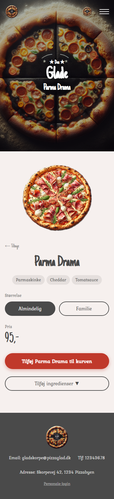
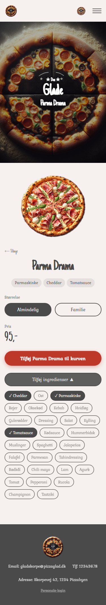
Figma: Ingredienspanelet viser en lodret liste med check-bokse.
Implementeret: Flex-wrap pill-chip grid. Tre visuelle tilstande:
Begrundelse: 29 ingredienser i en lodret liste er svær at scanne. Pill-grid er kompakt og giver hurtig visuel feedback. Implementeringen er mere ambitiøs end Figma-eksemplet: vi henter alle 29 ingredienser fra serveren (GET /ingredients) med Promise.all, så brugeren kan tilføje noget der ikke er på pizzaen i forvejen — ikke kun fjerne basisingredienser.
Figma: Kurvsiden viser kun navn, pris og "Fjern"-knap.
Implementeret: [−] [antal] [+] Fjern pr. kurvelinje.
Begrundelse: Standard UX i alle webshops. Opgavebeskrivelsen kræver "intuitiv interaktion og tydelig feedback" — mængdekontrol opfylder begge uden at brugeren skal tilbage til menuen.
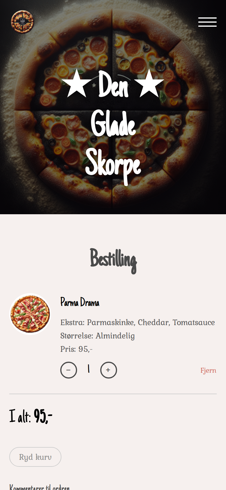
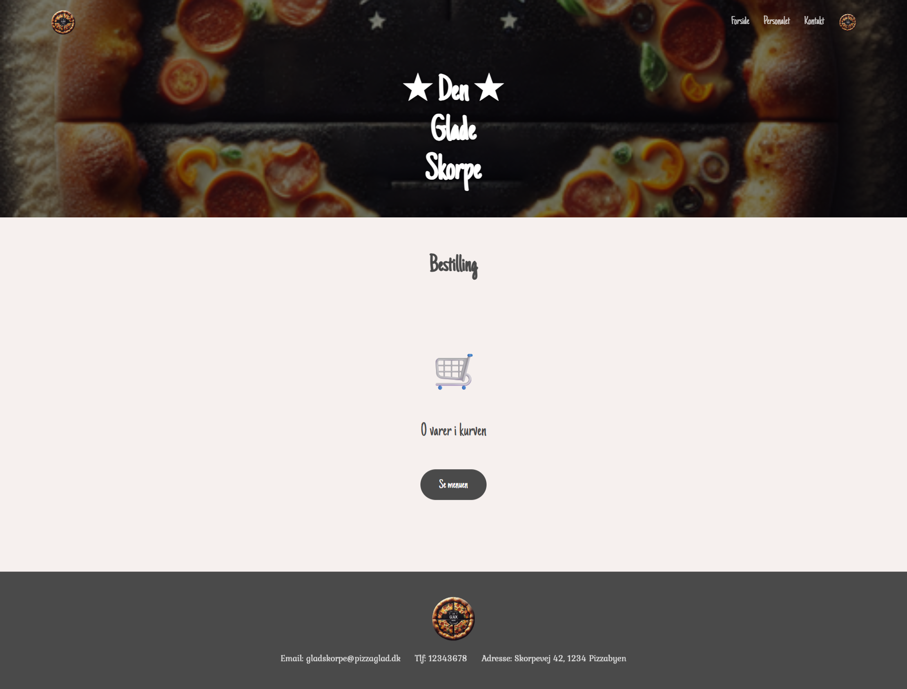
Figma: "Kurv" som tekstlink med tal-badge.
Implementeret: Logo-billedet (logo.png) som cirkulær pizza-ikon med count-badge overlay.
Begrundelse: Et ikon kommunikerer formålet hurtigere end tekst, bruger mindre plads i nav-baren, og er konsistent med pizzeriaets brand-visual.
Figma: Hvide kort-modaler ved order/kontakt-bekræftelse.
Implementeret: Dedikerede sider (/order-confirmation, /contact/tak) med pizza-headerbilledet som fuld-skærms baggrund og hvid tekst.
Begrundelse: En dedikeret route er mere stabil end en modal (ingen scroll-position-problemer), og den visuelle "brand moment" med pizza-baggrunden matcher sitedesignet bedre end et hvidt kort.
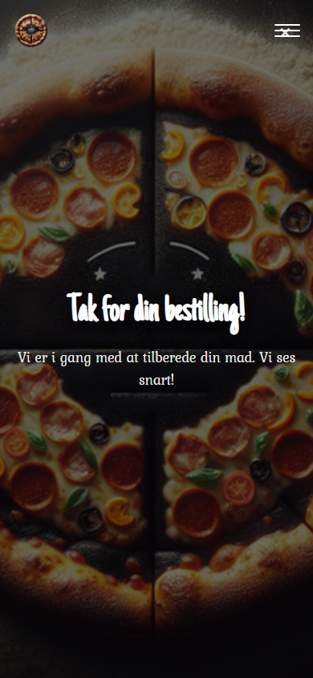
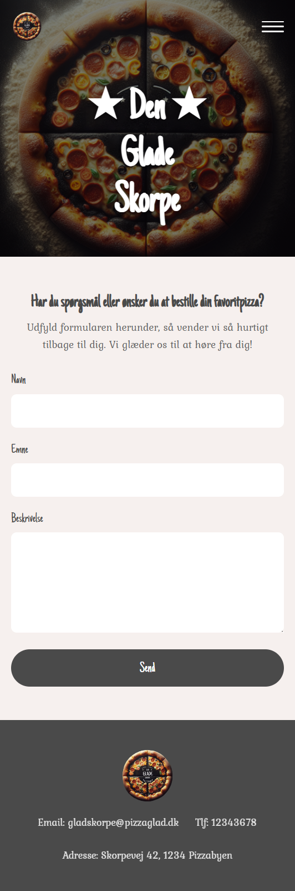
Alle 7 tilvalgsopgaver er implementeret (minimum 1 krævet).
| Nr. | Tilvalg | Status | Detaljer |
|---|---|---|---|
| 1 | Responsivt desktop-layout (>1024px) | ✅ | Breakpoints ved 768/1024/1440/2560px. Grid: 3-kol mobil → 6-kol ultrawide. |
| 2 | Extra ingredienser på retteside | ✅ | Promise.all henter dish + alle 29 ingredienser parallelt. Pill-chip grid, 3 tilstande, selectedExtras gemmes i kurv. |
| 3 | Backoffice: Retter CRUD | ✅ | Opret/rediger/slet med billede-upload via FormData. Kategori og ingredienser kan sættes. |
| 4 | Backoffice: Beskeder | ✅ | Viser alle beskeder fra kontaktformularen, sletning understøttes. |
| 5 | Backoffice: Ordrer | ✅ | Viser alle indkomne ordrer med detaljer. |
| 6 | Afgiv ordre via serveren (POST) | ✅ | Kurv sender POST /order med retter, størrelser og total. Kurv tømmes → redirect til /order-confirmation. |
| 7 | Authentication — backoffice login | ✅ | JWT via POST /auth/signin. Token i localStorage. RequireAuth beskytter alle /backoffice-routes. 401 logger ud automatisk. |
// DishDetail.jsx — henter dish og ingredienser parallelt
useEffect(() => {
Promise.all([getDish(id), getIngredients()])
.then(([data, ingData]) => {
setDish(data)
const baseNames = data.ingredients?.map((i) =>
typeof i === 'string' ? i : i.name) ?? []
setSelectedExtras(baseNames) // basisingredienset pre-checked
const allNames = (ingData ?? []).map((i) =>
typeof i === 'string' ? i : i.name)
setAllIngredients(allNames) // alle 29 tilgængelige
})
.catch((err) => setError(err.message))
.finally(() => setLoading(false))
}, [id])USE_JWT=true aktiverer fuld JWT-beskyttelse på serveren. Frontend sender altid Authorization: Bearer <token> — serveren ignorerer det bare når JWT er slået fra. Det betyder at koden fungerer identisk uanset serverindstilling.
| Pakke | Formål |
|---|---|
react + react-dom |
UI-framework |
react-router-dom |
Klient-sidenavigation |
@fontsource/just-another-hand |
Lokal font — overskrifter |
@fontsource/kurale |
Lokal font — brødtekst |
vite + @vitejs/plugin-react |
Build-tool og dev-server |
Alle øvrige afhængigheder (Express, Mongoose, Multer, bcryptjs, jsonwebtoken) er del af det udleverede backend-projekt og er ikke tilføjet af mig.
Jeg har anvendt GitHub Copilot (Claude Sonnet 4.6) som kodningsassistent i VS Code under hele projektet.
Hvad Copilot hjalp med:
Hvad jeg selv besluttede og kan forklare:
basketKey-strategien for størrelsesopdeling i kurvenPromise.all-mønsteret til parallel datahentning i DishDetailAl kode er gennemlæst og godkendt af mig. Jeg er bevidst om indholdet af hvert eneste fil og kan redegøre for dem mundtligt.
| Type | Oplysning |
|---|---|
| Frontend URL | http://localhost:5174 |
| Backend URL | http://localhost:3042 |
| Admin login | admin@mediacollege.dk / admin |
| Guest login | guest@mediacollege.dk / guest |
| MongoDB database | mcd-dengladeskorpe |
| USE_JWT | false (login valgfrit — sæt true for at aktivere) |
cd mcd_web_dengladeskorpe_server
npm install
npm run "Opret Database"
npm run "Start Server"cd dgs_frontend
npm install
npm run devBruger kan gennemføre et fuldt bestillingsforløb: vælge ret → tilpasse ingredienser → vælge størrelse → lægge i kurv → justere antal → afgive ordre → se bekræftelse. Alt fungerer i én sammenhængende brugerrejse uden fejl.
Komplet opret/rediger/slet med billede-upload via FormData. Bekræftelsesdialog ved sletning. Live opdatering af tabel efter hver operation.
Retter kan oprettes med titel, priser (normal + familie), ingredienser og kategori. Billede-upload understøttes. Eksisterende retter kan redigeres og slettes.
Alle 29 tilgængelige ingredienser hentes fra serveren — ikke hårdkodet. Brugeren kan tilføje hvad som helst til pizzaen, ikke kun fjerne basisingredienser. Valgte ingredienser vises i kurven under "Ekstra:".
Layout skalerer fra 320px (ultrasmalle telefoner) til 2560px (ultrawide). Hvert breakpoint er testet og har meningsfulde layoutændringer (antal kolonner, fontstørrelser, hero-højder).
Alle sider er designet mobile-first. Burger-menu, fluid grids og kompakte layouts er udgangspunktet — desktop er en progressiv forbedring.
Alle API-kald har loading-indikatorer, fejlbeskeder og tomme-tilstande. Ingen side viser en blank skærm under indlæsning eller ved fejl.
Alle screenshots er taget med FireShot browser-udvidelse.
Mobil: screenshots vist i Chrome DevTools mobilvisning.
Desktop: 1440 px viewport.
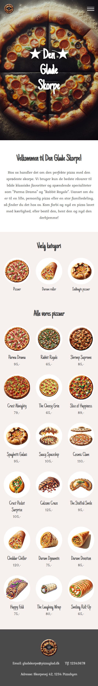
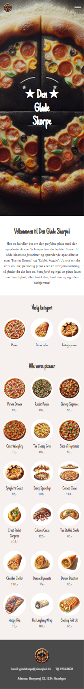
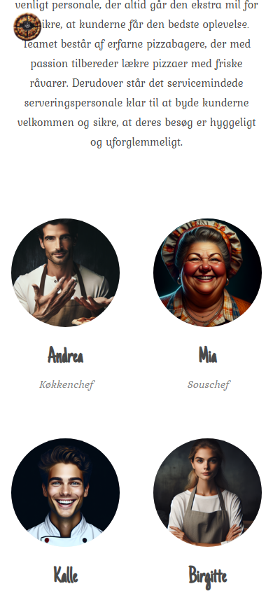
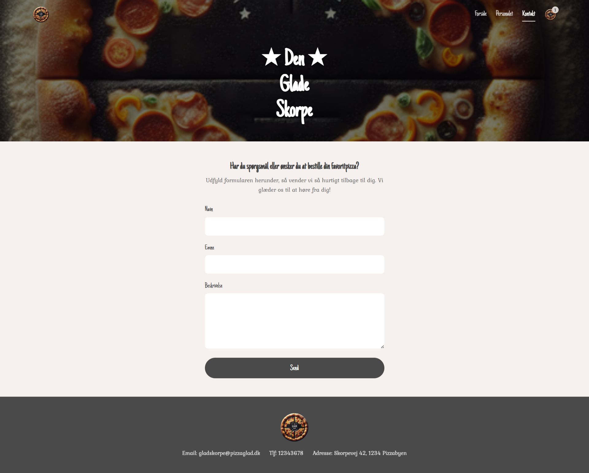
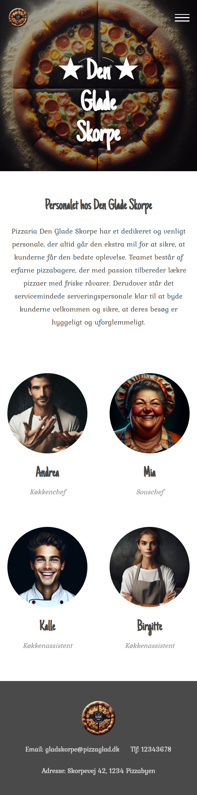



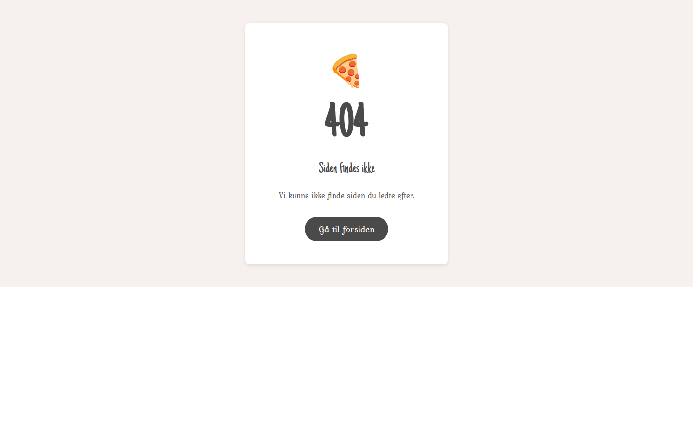
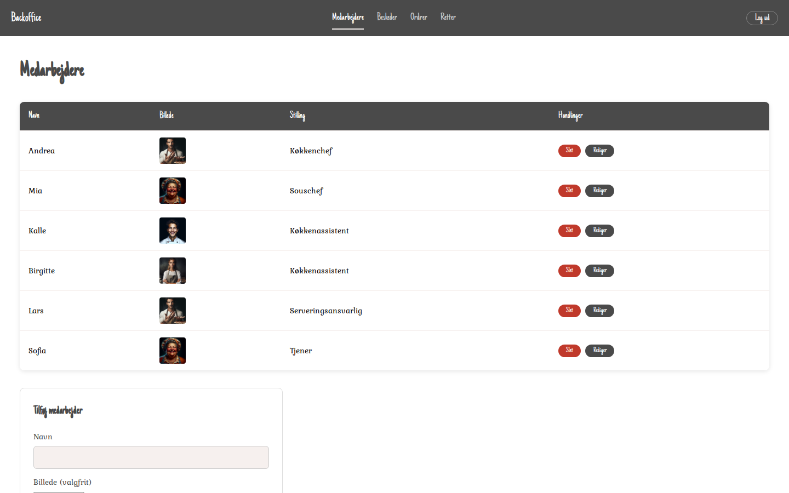
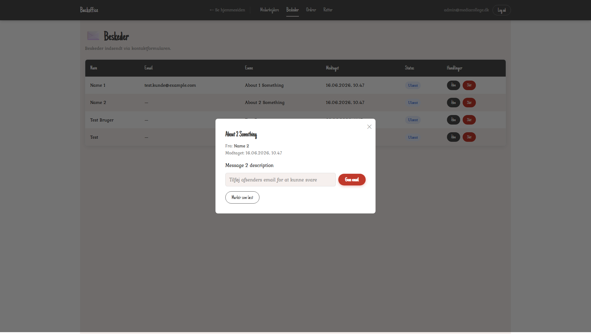
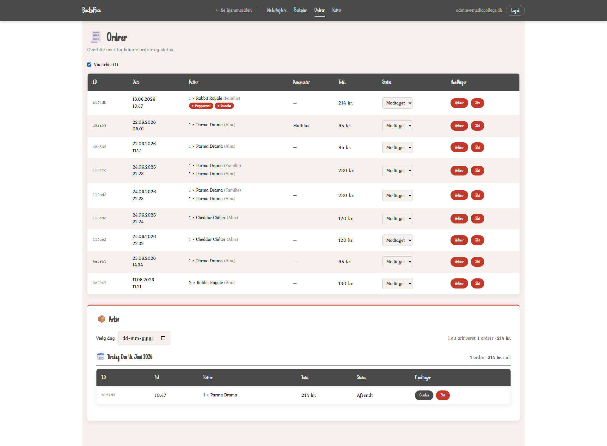
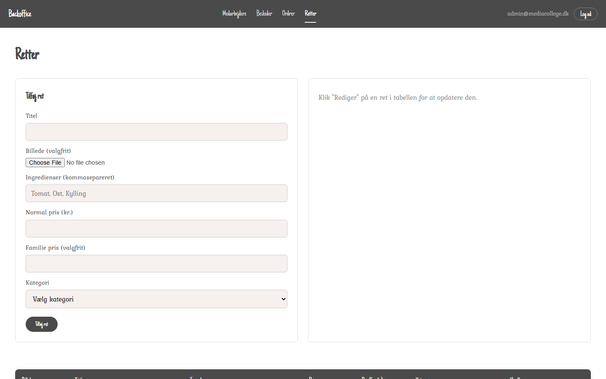
| Ressource | URL |
|---|---|
| GitHub repository | https://github.com/MathiasBoll/Opgave---Den-Glade-Skorpe |
| Figma design | https://www.figma.com/design/yzjuDfwFzngz8EySrOXSf6/Den-Glade-Skorpe |
| GitHub Issues | https://github.com/MathiasBoll/Opgave---Den-Glade-Skorpe/issues |
mcd_web_dengladeskorpe_server/[mcd]/assignment/den_glade_skorpe.md